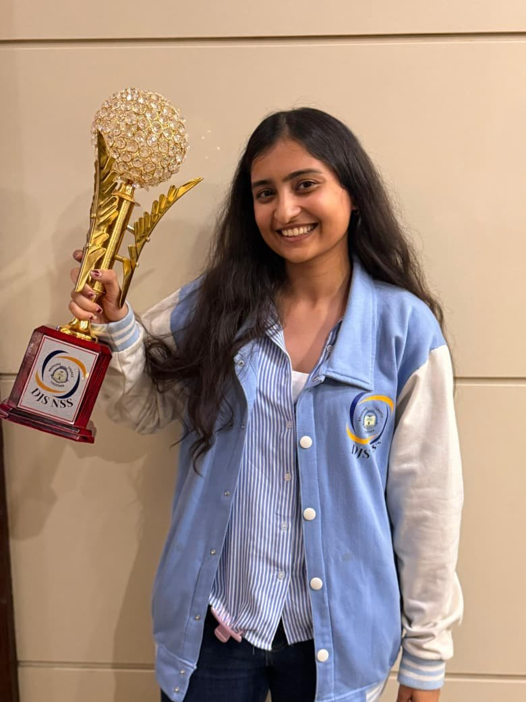
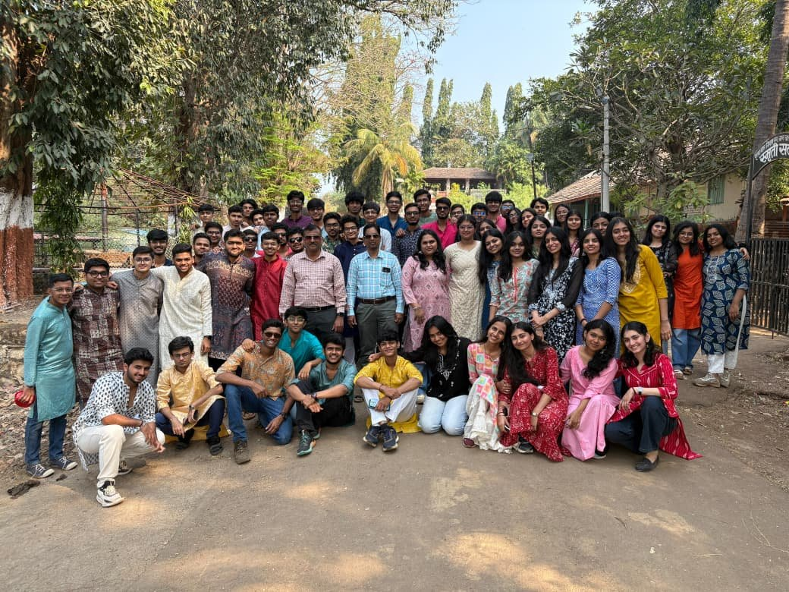
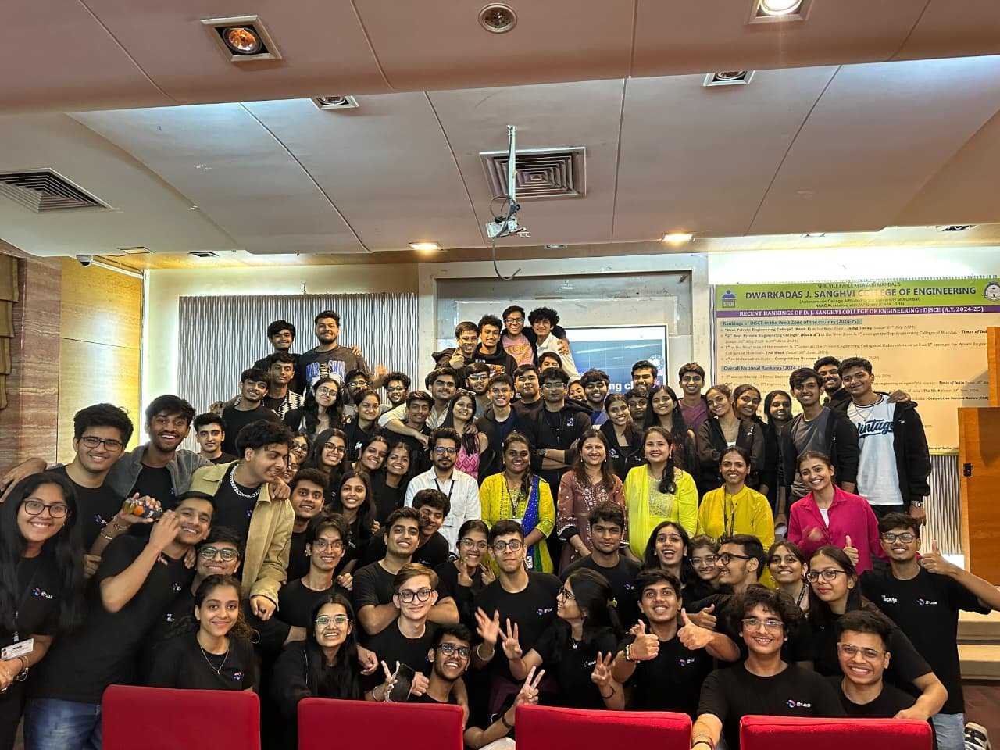

The story behind the dashboards
I'm a final-year Data Science student at SVKM's DJSCE, Mumbai, preparing for a career in analytics and consulting. What draws me to this field isn't the tools, it's the moment when a messy, ambiguous business problem starts to take shape. That instinct to ask "what are we actually trying to solve?" before touching data is the thread running through everything I've built.
The part of me that loves analytics is the same part that loves running social initiatives, organising drives, and getting people to show up for something bigger than themselves. Both are about systems, people, and turning intent into measurable impact.
Toolkit
Interests
Leadership & Community
Started as a publicity team member; promoted to Vice Chairperson. Built the operational rhythm that outlasts any individual.

Awarded by the Principal for sustained community impact

Rural development camp - Dahanu, Jan 2025
Managed digital marketing and outreach for DJSCE's official data science community.

DJS S4DS - Publicity team, 2024 – 25